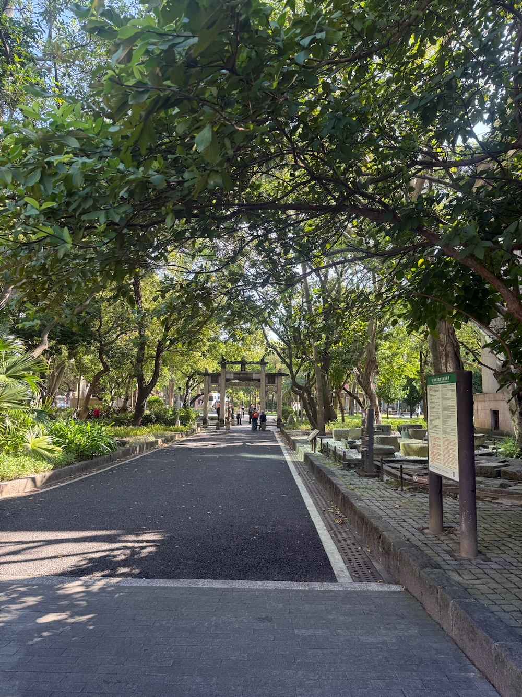
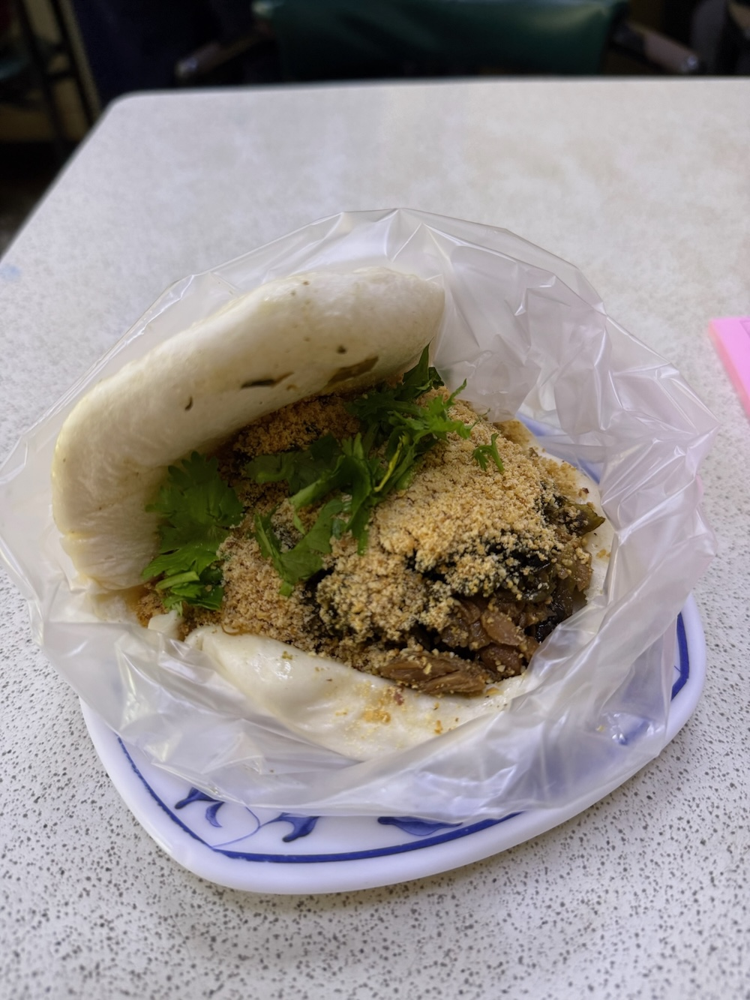
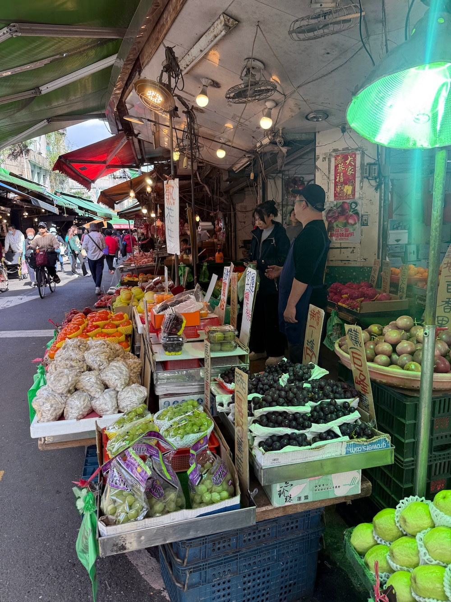
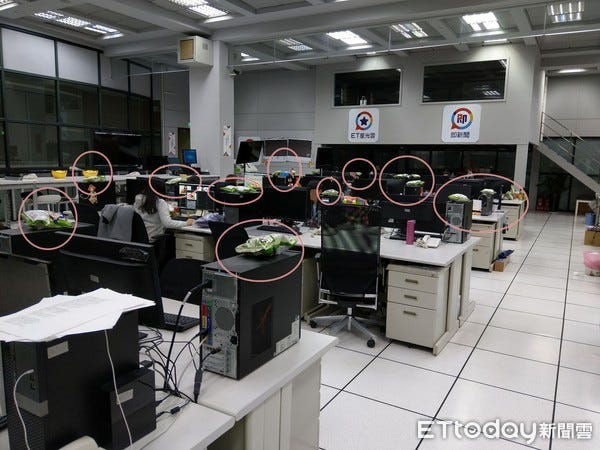
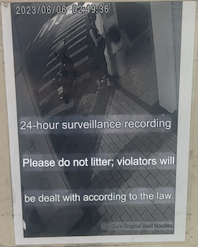
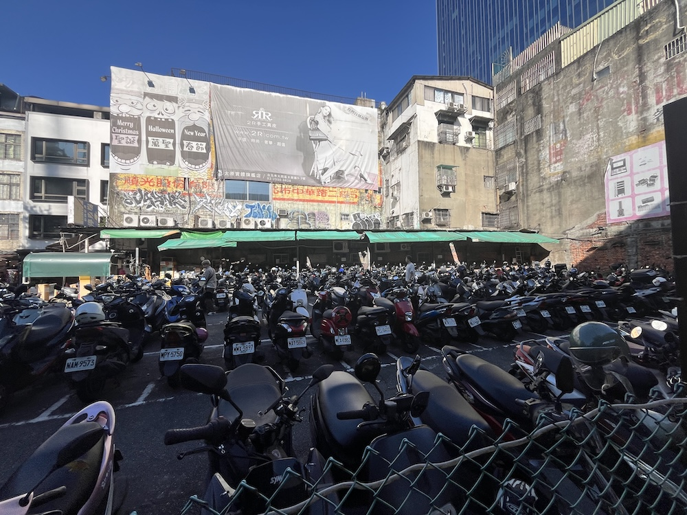
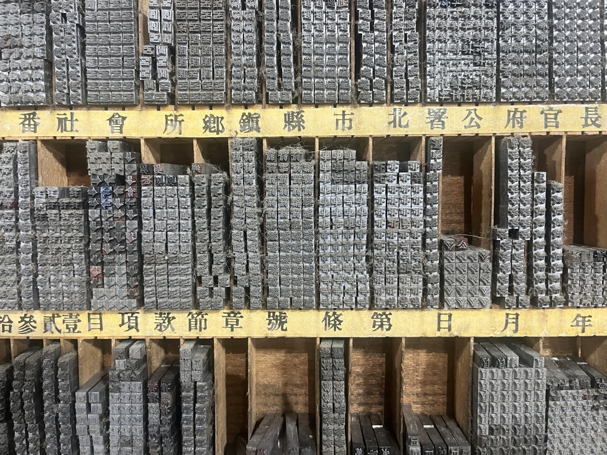
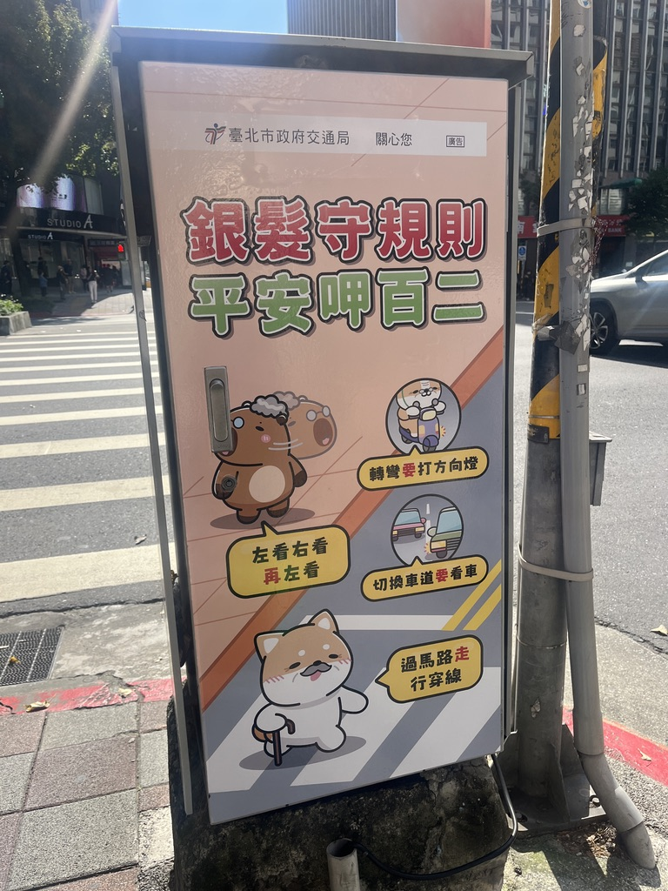
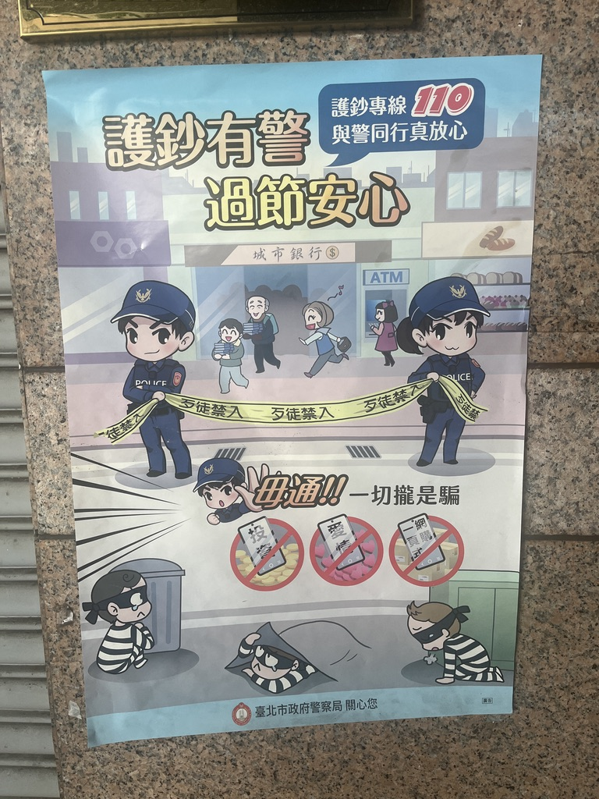
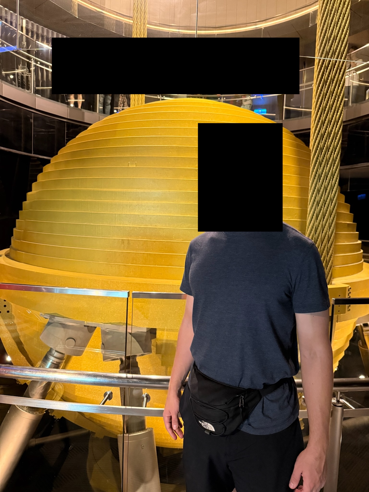

Taiwan trip report from 23-30 November 2025. This is more a collection of thoughts and observations about Taiwan than a play-by-play report.
Taiwan is nice. By what definition of nice? you ask skeptically. To which I answer: all of them.
The place itself is nice. It's extremely nice to simply be there and walk around and exist, even if you're not there for a particular reason or doing anything particularly exciting or fun. This is what Paul Graham would have felt if he had included Taipei in his Cities and Ambition.

The people are nice. Everyone we interacted with had a smile on their face and love in their heart. We never felt direct pressure to buy anything or tip or really do anything at all; we were just left alone to do as we pleased, tourists enjoying a welcoming society and all it had to offer. There's also an thick air of trust throughout the country, a feeling that you can leave your laptop in a coffee shop or door unlocked and be just fine and whole when you come back.
The weather is nice. Although we did go during one of the best times of the year and about a week or two after a typhoon, the temperature was moderate and we didn't experience any crazy weather. (If you've been during the summer, you may be scoffing at this paragraph.)
The parks within the city are nice—the landscaping is well-groomed and designed and there are the perfect amount of benches with and without shade. The grass is green and the flowers colorful. The museums are well-curated, informative without going into too much detail, and clean.
The food is nice, but that deserves its own section.
Is this place a utopia? An argument could be made.
The food here is as amazing as it is plentiful as it is cheap as it is varied. Restaurants line every street and alleyway; some are crowded with lines and others are empty with bored shopowners twiddling their thumbs, but both have plenty of food at the ready for the next hungry customer. Nor are the restaurants the same. Sure, beef noodles and buns remain some of the staple dishes, but plenty of other options exist, from turnip cakes (lo bak go) to Chinese omelettes to Taiwanese burgers (koah-pau) to steamed buns to raw eel. The tastiness is also top-notch, although we probably filtered out most of the bad places using Google reviews.

Did I mention cheap? Taiwanese meals were many times cheaper than the American equivalent because everything's cheaper there: labor, ingredients, real estate. Competition is fierce and forces the market to drop prices to keep up. I love free markets.

And healthy(-ish)! Fruits, vegetables, rice, and meats, particularly pork and fish, are staples in diets here, which, all things considered, is fairly healthy. There are definitely fried foods. Desserts aren't as obviously laden with sugar and trans fat. It's incredibly easy to eat healthy food while out and about.

Comparative advantage can be seen in the flesh here by watching just how many Taiwanese people eat out for their meals. The food is cheaper because the restaurants and vendors buy in bulk and it's more delicious because, well, they're chefs and have practiced their craft for quite some time. In multi-generation homes (i.e., children, parents, and grandparents all live together), the grandparents will often get groceries from the local street markets during the day and have food ready for everyone when they get home from work or school. As an aside, I've heard in that in a southeast Asian country (I forgot which) all social classes go out to eat at street vendors or restaurants—it's not just the poor out eating street and fast food while the rich dine in or the rich out eating at fancy restaurants while the poor scrape by on rice and beans at home. I got a similar feeling in Taiwan that nobody was above eating street food.
Like everywhere with any business, the places that had massive lines or were filled up with customers were often the most delicious, the most TikToked/Instagrammed, or some combination of both. A donut shop we walked by had almost 80 people in line! Thankfully most of these places seem to have mastered the art of the "here's your food now pay quickly and GTFO but in the nicest way possible so we can get more business and you can enjoy our food".
The night markets are pretty awesome. Smells, sights, and sounds galore. You can grab some stinky tofu in one booth, turn around and play some carnival games, go to the next booth for some okinomiyaki because it turns out stinky tofu isn't your thing and the person you're with almost vomited from the smell, then buy some shirts and trinkets in another section. There are also so many people from all walks of life: families and friends, young and old, locals and foreigners. Like I said above, night markets welcome all demographics and shun none.
All of this makes Taiwan a food lover's paradise. Cheap, unique, and delicious food is everywhere, served up by friendly people.
(In case it wasn't obvious why I feel a deep pain now, it's because an average meal in my home city costs somewhere around $15 (I'm a cheap bastard and want $3 meals again) and I often can't simply walk to it from my apartment (I'm a lazy bastard and want it right next door). The variety is definitely available if I'm willing to drive, though.)
Before looking it up, I guessed the obesity rate of Taiwan is 15%. The actual number is 12.5%.
And for some specific recommendations in no particular order:
Taiwan is a land of superstition and it shows in two food-related ways:
In Taiwanese the pronunciation of the word pineapple sounds like a propitious blessing of good fortune and future prosperity. ... The pineapple has been referred to in traditional culture as the best gift for a house warming party and upon the opening of a new business or to wish one’s favorite political candidate success at the election boxes.Bittersweetly, lawyers, nurses, and police officers are exempt from this tasty tradition because if their job is prosperous, it means crime and sickness.
A phenomenon in Taiwan wherein people put snacks of the brand Kuai Kuai next to or on top of machines. People who do this believe that, because the name of the snack—"Kuai Kuai"—stands for "obedient" or "well-behaved," it will make a device function without errors.Apparently TSMC is a big proponent of this. Maybe this is their secret sauce, not their insane work culture! I brought a bag back home to keep near my fab tools.

Walking around any streets you'd think that Taiwan had invented the 2 nm transistor node before trash cans. They are few and far in between for a few apparent reasons that I can deduce or find online:
There's an unspoken rule about being able to pop into any of the numerous 7/11s to dispose of small items. We came up with the system of using a small bag to hold our trash while we walked around. For households, trash trucks drive around playing their version of ice cream truck music to notify residents that they better get outside to throw away their garbage.
Litter was almost non-existent, even in the extremely crowded night markets where it's easy to drop stuff and difficult to pick up. There was even a human street sweeper outside our hotel sweeping leaves into a dust bin.
Unsurprisingly, there are some bad apples who litter. And unsurprisingly, the local populace doesn't take too well to it, opting to shame them (and I'm sure name them if they could) through screenshots of security camera footage. Taiwanese Liam Neeson ready to hunt down litterbugs might make for a good advertising campaign!

Read a bit more about Taiwan trash culture here.
The Taipei metro is very orderly. New riders patiently wait in a single-file line marked on the floor while the old riders get off, then get on when the coast is clear. Nobody plays music out loud. Nobody talks on their phone. Few people talk to each other. All you really hear is the noise of train on the rails. It's eerily quiet and calm compared to the complete and utter chaos that is New York City's subway. But this is exactly how it should be by default; if I wanted crazy, I'd go to the club or bad part of town.
Scooters reign supreme. Parking is easier to find and actually perform; the low(er) speeds of cars are less likely to kill you in a collision; infrastructure is made for you (there is a scooter-only section in front of cars at stop lights). I don't think I've ever seen so many scooters in one place. It's comical watching tens of scooters drive around a roundabout like they're in a Mario Kart race.

Walking is second in command on the transportation hierarchy. The metro is never more than a few minutes' walk away. Bikes are available for rent if you really need one. The climate (for us) was generally pleasant and made walking pleasant by extension.
All vehicles are super courteous to pedestrians, except for that one guy in Tainan who almost ran me over because he was looking at his phone.
Mandarin and English are high-class, Taiwanese is middle-class, and Hakka, the tribal language, is low-class, like you're coming from a Native American reservation. At least this is what our food tour guide told us. If you want a high-class job, learn Mandarin. This goes against my intuition of the Taiwanese government wanting to keep the Taiwanese language at the forefront because it continues to make them culturally different than mainland China, further separating the identity of the Taiwanese people from Chinese people.

I've never read Chinese characters before. For whatever reason I incorrectly assumed there would be a pretty standard font, but nope, turns out they have their own Calibris and Arials and Times New Romans for us foreigners to struggle with! My first run-in with this was at a breakfast spot we had already visited. The first time we went a very kind Taiwanese-American woman helped us order, showing us the where the pictured menu items were on the actual text-only order ticket itself. Easy peasy. I came back a few days later, confident that I could replicate it. Nope. I spent 10 minutes meticulously comparing the menu to the ticket to find exactly what I wanted. Damn you and your beautiful fonts, Taiwanese typographists!
Most people barely spoke English, forcing us to quickly adapt by pointing, holding up numbers with our fingers, and having a beaming smile to make sure we were friendly and not at all miffed by their lack of English. The "worst" ESL interaction we had was when we ordered a breakfast item and she came back with a Google Translate screen that said "Chinese medicine". Me, in my infinite awkwardness when in another country and not being able to speak the language, simply nodded yes and prayed that it's what we wanted. It came out looking normal, tasted normal, and I didn't experience any crazy side effects, so I think Google just had a brain fart.
Everything is cartoonized. Wet floor signs, condom advertisements, crosswalk signs reminding you to press the button, street art, bike vs. pedestrian lane reminders, some sign that looks to be about karaoke that I couldn't translate, entrances to buildings and storefronts. You name it, there's probably a cartoon version of it somewhere in Taiwan. Call it rule 35.

And all of it was lovely. It screamed "we can have fun while still conveying pertinent info" instead of screaming "we are a boring society and must convey pertinent info in the most boring way possible for reasons we haven't really thought about". Have some pizzazz for crying out loud! Don't just use a wet floor sign, use a wet floor sign in the shape of a banana! Don't just make a sign that says the name of your business, make a sign that gives the info with a fun little mascot! Don't be boring, be fun!

Taipei 101's tuned mass damper system is flippin' awesome and well worth the $25 it costs to see in person. Here's a video of it working during an earthquake. T101 also houses what used to be the world's fastest elevator at a top speed of 60.6 kmh or 37.7 mph.

The dress code is super casual: good-looking and comfortable was the criteria most people seemed to use. I saw very few suits while out and about. Taiwanese Redditors seem to confirm this. For weddings, dressing up doesn't matter nearly as much as how thick the hóngbāo you bring is.
Bidets are widely used over here. Nice hotels seems to offer heated-seat bidets by default.
The Grand Hotel in Taipei was awesome for our last night's stay. They have tours of their once-secret tunnels (one of them even has an emergency slide, but alas, you aren't able to ride it due to "safety concerns"—I expressed my disappoint to some chuckles and a polite "you're not the first!"). We discovered that Grand Hotel weddings are highly sought after when we walked in upon 20+ wedding-dressed couples standing in line (of course) to take their pictures in front of the Christmas tree and staircase.
Cash is still king. Don't get caught without a few hundred NTD on your person, otherwise it may be a bit awkward when it comes time to pay. Easy Cards are convenient and you can get some cool designs at any 7/11. Some (bigger) places accept credit cards.